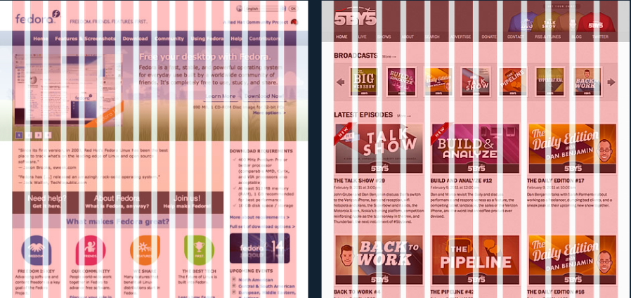

HTML그리드 시스템
그리드 시스템이란?
페이지 콘텐츠를 논리적이고 일관성 있는 구조로 디자인할수 있도록 돕는 그래픽 시스템을 말합니다.
그리드(Grid)란 바둑판같이 일정한 무늬를 칭하며 선에 맞춰서 디자인에 규칙을 부여하여 쉽게 제작하는데 도움을 줍니다.
그리드 시스템은 1970년대부터 건축, 일러스트레이션, 책, 신문등 다양한 분야에 걸쳐 사용되어 왔는데, 인터넷 보급후에는
자연스레 웹 디자인에도 적용되어 사용되기 시작한 시스템입니다.

그리드 시스템은 위와같이 12줄, 16줄 등 그 형식은 다양하며 사용자 입맛에 맞춰 틀을 잡거나, 일관되고 안정된 디자인을 하는데 도움이 됩니다.